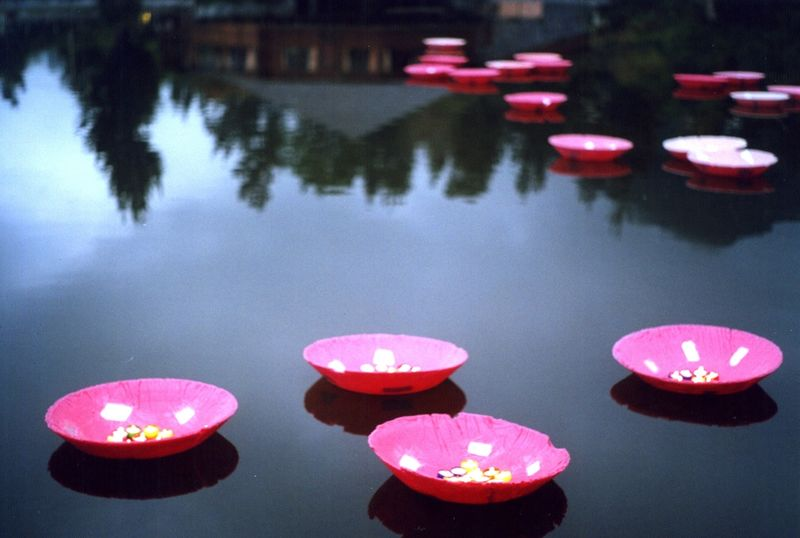

Sophie Bazin nettoie ses pinceaux
Une première exposition sur le web
Quelques toiles de la Réunion, colorées et présentation de la jeune artiste: Sophie Bazin Découvrez le concept du nettoyage de pinceaux... je n'en dis pas plus, découvrez que diable !Évolution artistique
De cette première exposition sur le web, il ne reste que quelques pages, archivées sans l'intégralité des toiles exposées. Mais on Retrouve Sophie Bazin quelques années plus tard (en 2002) sous le nom de Mary BATISKAF co-signant l'exposition Liberté Plastik par Arius et Mary Batiskaf.
Un blog et plein d'activités

L'artiste plasticienne n'en est pas restée là, on la découvre encore aujourd'hui dans plusieurs recoins du net. Elle anime souvent des ateliers dans des écoles avec des résultats que les gamins doivent garder bien précieusement dans leur case.
Sur son blog, pas mis à jour depuis 2007, On découvre qu'elle exerce maintenant entre la Réunion et la grande île de Madagascar. Ailleurs, elle raconte comment Arius et Mary Batiskaf ont installé un monument sur la mare à joncs du Cirque de Cilaos ainsi que des « Figures de proue » pour les stèles du Jardin de la mémoire conçu par Karl Kugel sur l’Ile du Mozambique.